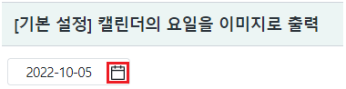
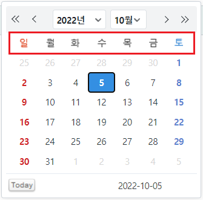
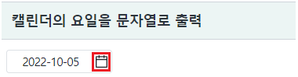
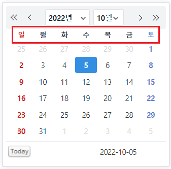
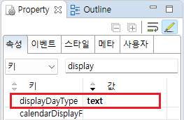
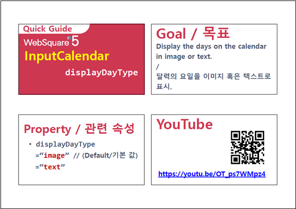

캘린더의 요일 영역을 브라우저에 표현하는 방법의 설정 예제입니다. 설정을 통해 이미지 또는 문자열로 표현할 수 있습니다.
[기본 설정] 캘린더의 요일을 이미지로 출력
캘린더의 요일을 문자열로 출력
예제 프로젝트의 경우 이미지와 문자열의 차이가 확연하게 드러나지 않습니다.
브라우저의 개발자 도구를 통해 출력된 요소(elements)를 명확하게 비교할 수 있습니다.
영역 [[기본 설정] 캘린더의 요일을 이미지로 출력]의 InputCalendar의 캘린더 아이콘을 클릭합니다.
캘린더의 요일이 이미지로 표현된 것을 확인합니다.
(초기 값은 예제 파일이 실행된 날짜가 출력됩니다)
[브라우저(Chrome) 실행 예시 - 캘린더 아이콘]

[브라우저(Chrome) 실행 예시 - 캘린더 - 요일을 이미지로 표현]

영역 [캘린더의 요일을 문자열로 출력]의 InputCalendar의 캘린더 아이콘을 클릭합니다.
캘린더의 요일이 이미지로 표현된 것을 확인합니다.
(초기 값은 예제 파일이 실행된 날짜가 출력됩니다)
[브라우저(Chrome) 실행 예시 - 캘린더 아이콘]

[브라우저(Chrome) 실행 예시 - 캘린더 - 요일을 문자열로 표현]

속성을 지정합니다.
[필수] displayDayType="text" //[default:image, text]calendar의 요일 부분을 image 또는 text 표현할지 설정한다
그림 1.웹스퀘어5 SP5 스튜디오의 Property View(속성창) 예시

[소스 코드 예시]
<!-- inputCalendar 의 소스 본문 예시 --> <w2:inputCalendar displayDayType="text" calendarValueType="yearMonthDate" id="ica_exam_2"> </w2:inputCalendar>
displayDayType
[웹스퀘어5 SP5 개발 가이드] InputCalendar
링크 : https://docs1.inswave.com/sp5_user_guide/8df43d1f59fab704#579244ff7483b50c
[웹스퀘어5 SP5 개발 가이드] InputCalendar - 요일을 텍스트 혹은 이미지로 표시 (displayDayType)
링크 : https://docs1.inswave.com/sp5_user_guide/8df43d1f59fab704#688fa6e1aa1f290d
InputCalendar - 요일을 텍스트 혹은 이미지로 표시 (displayDayType)
링크 : https://youtu.be/OT_ps7WMpz4
